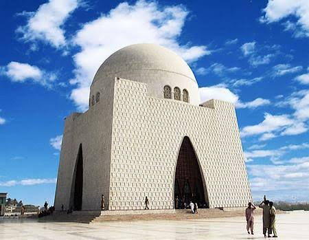

Portfolio
Recent Work
KARACHI
Karachi is the capital city of the Pakistani province of Sindh. It is the largest city in Pakistan and the 11th largest in the world, with a population of over 20 million. Situated at the southern tip of the country along the Arabian Sea coast, Karachi formerly served as the federal capital from 1947 to 1959.
.jpg)
ISLAMABAD
Islamabad is the capital city of Pakistan. It is the country's tenth-most populous city with a population of over 1.1 million and is federally administered by the Pakistani government as part of the Islamabad Capital Territory — with a metropolitan population of over 2.3 million.
.jpg)
LAHORE
Lahore is the capital and largest city of the Pakistani province of Punjab. It is the second-largest city in Pakistan, after Karachi, and 27th largest in the world, with a population of over 14 million. Lahore is one of Pakistan's major industrial, educational and economic hubs.
.jpg)
GAWADAR
Gwadar is a port city on the southwestern coast of the Pakistani province of Balochistan. It is on the shores of the Arabian Sea, opposite Oman, and had a population of over 90,000 in 2017 census. It was an overseas possession of the Sultanate of Muscat and Oman from 1783 to 1958, when it was purchased by Pakistan.